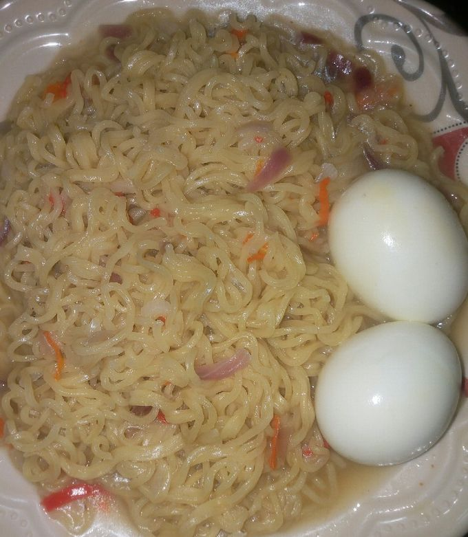

Indomie

Description
Indomie is an instant noodle, usually made with eggs.
Ingredients
- Satchet of indomie
- An onion (sliced)
- Teaspoon of oil
- Pepper
Steps
There are actually different ways of making it but here's the simplest one.
- Boil some water in a pot, allow to boil.
- Put in the sliced onions, oil and pepper.
- Add the indomie and its spices, allow to cook.
- Serve hot with boiled egg according to preference.
Home